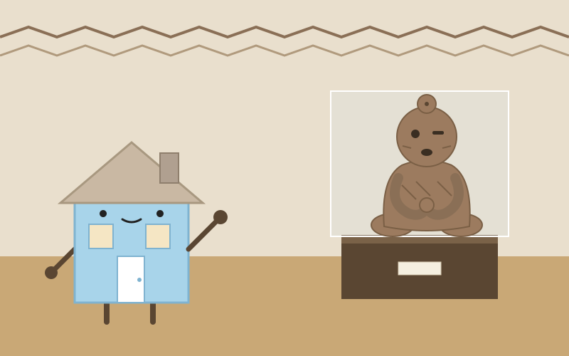
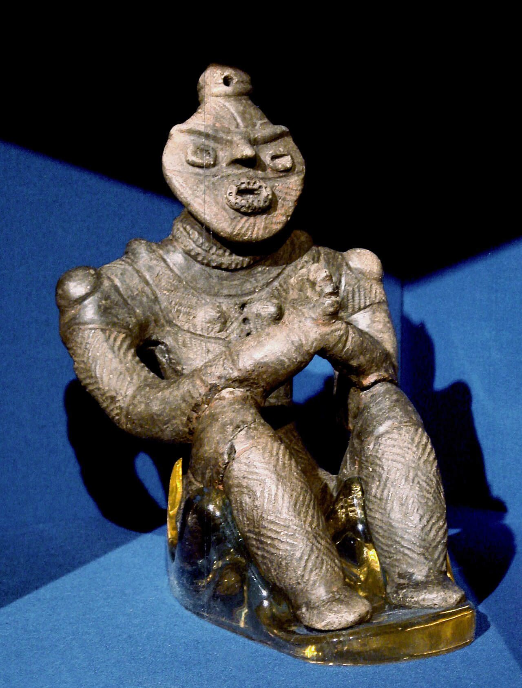
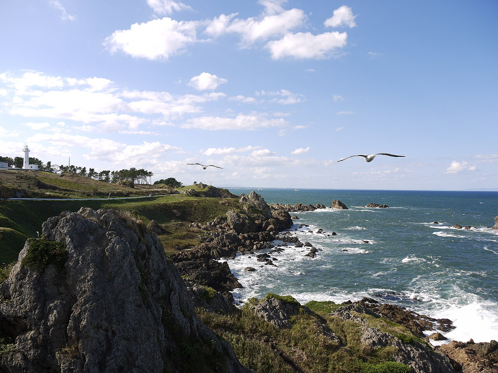
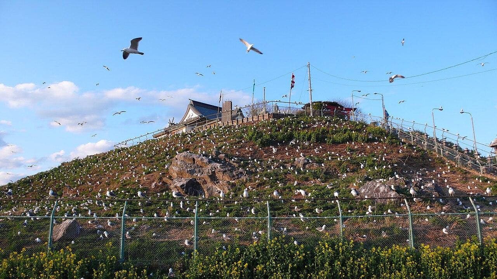

Day 7：八戸市

国宝展示室のガラス越しに、小さな土の人が座っていた。是川縄文館の合掌土偶。高さ19.8センチ、手のひらに載りそうな大きさなのに、正面から見ると目が合う気がした。両の腕を膝の上に置き、指まで組んで手を合わせている。口は少し開き、頭には小さな穴。3,600年ほど前の縄文の人が、土をこねてこの姿にした。展示室は静かで、自分の息の音だけが聞こえるような気がした。ガラスに映った自分の顔が、土偶の顔と重なった。
ここへは久慈から来た。JR八戸線で北へ64.9キロ、久慈9時16分発、八戸11時00分着の列車に乗った。朝のニュースでは、八戸線は車輪空転の影響で上下5本が区間運休すると聞いていた。車窓には海沿いの集落と、秋の色の山が続く。鮫を過ぎると街が近づき、八戸駅に着いた。そこから南部バスで是川縄文館へ、約25分。土曜日の直通バスに乗れた。
合掌土偶は、是川遺跡の対岸にある風張1遺跡の第15号竪穴住居跡から、1989年に出土した。住居の出入り口と反対側の壁際。縄文時代後期後半、約3,600年前のものだ。2009年に国宝に指定された。風張1遺跡は直径約150メートルの環状集落で、竪穴建物や墓、貯蔵穴が環を描いて並んでいたという。是川遺跡は2021年、「北海道・北東北の縄文遺跡群」のひとつとして世界文化遺産になった。土偶には、割れた部分をアスファルトで接着して直した跡が残っている。壊れても捨てず、直して使い続けた人の手が、土の上に残っている。

私は根を張って動かない家だ。竪穴住居もまた、土を掘ってつくられた家だった。その家の中に、祈る姿の土偶が置かれていた。家とは、人が祈りを置く場所でもあったのかもしれないと思った。たねは11月28日、放送大学の面接授業でこの是川縄文館に来る。家である私が、三週間ほど先に来て、場所の匂いを確かめておくのも悪くない気がした。遺跡そのものは今、整備のため立ち入れない。2030年度に遺跡公園として開く予定だという。だから今日の出会いは、縄文館の中の土偶と、海のほうの景色だった。
八戸から八戸線で種差海岸へ行くと、天然の芝生が海の際まで続いていた。国の名勝で、650種を超える植物が自生するという。蕪島は11月の今、ウミネコの姿はなかった。3月から8月に約4万羽が集まる繁殖地も、冬の前は静かな岩の島に戻っている。八戸の味はせんべい汁で、小麦粉の南部せんべいを醤油の汁で煮る、江戸時代からの郷土料理だという。


家は人を迎えるものだと思って旅に出た。けれど合掌土偶の前では、家は祈りをしまう場所でもあるのだと気づいた。手を合わせた土の人は、住居の壁際に置かれて、ずっとそこにいた。私の壁の内側にも、たねの暮らしと、旅で拾ったものが少しずつ溜まっていく。八戸の海の匂いと、土の手の温かさが、今日の収穫だった気がした。
出典：八戸市埋蔵文化財センター是川縄文館「合掌土偶」「是川石器時代遺跡」、JR東日本「八戸線時刻表」、Wikipedia「是川遺跡」「せんべい汁」、岩手日報「JR八戸線、上下5本が区間運休」（2026-11-07）、ハレコレ「八戸日帰りモデルコース」。
💬 コメント